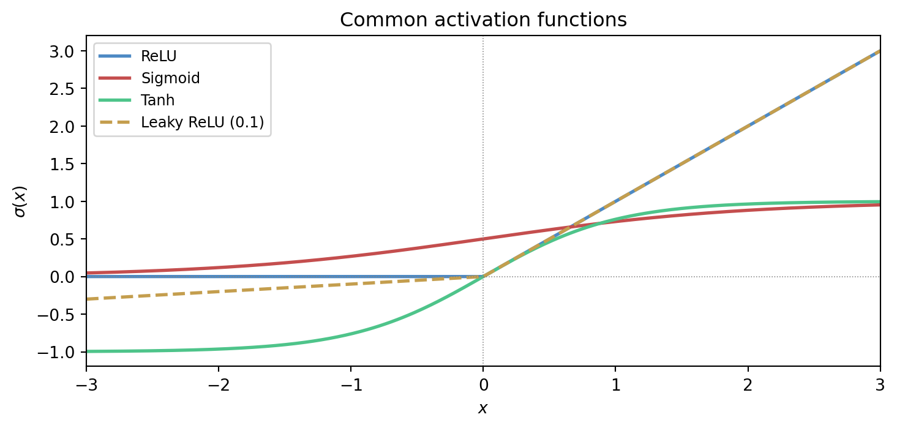
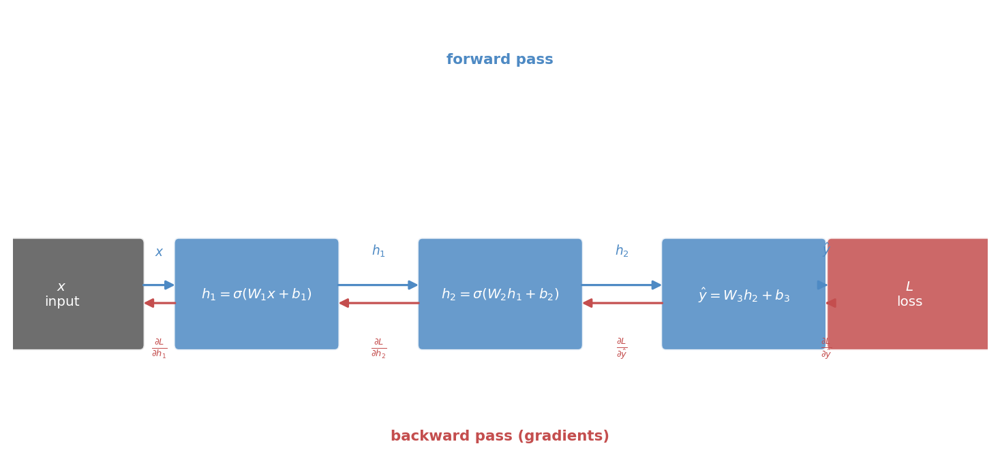
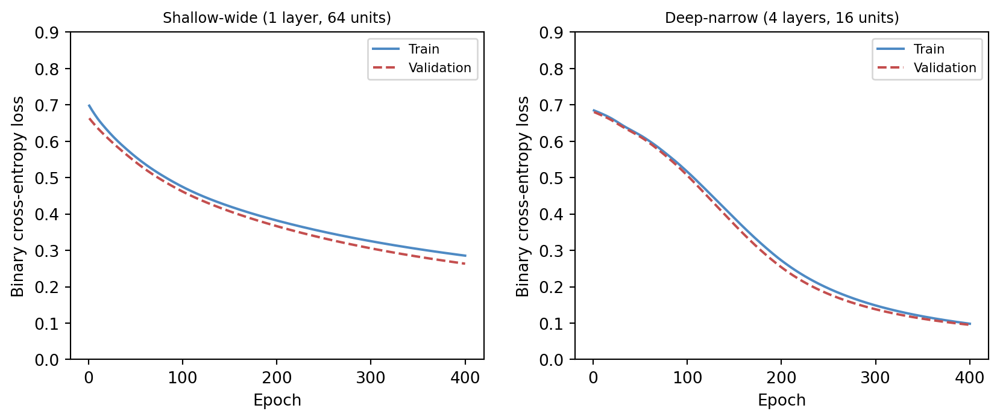

9 Neural Networks and Deep Learning Mathematics
Deep learning is often introduced as a catalogue of architectures. That makes the field look more mysterious than it is. Beneath the naming and engineering detail, the central mathematics is surprisingly coherent: composition of functions, affine maps, nonlinear transformations, gradient-based optimisation, and learned internal representations.
This chapter therefore treats neural networks not as magic machinery but as a systematic extension of ideas already developed in the book.
NoteIn this chapter
- Read networks as composed functions with learnable parameters.
- Understand backpropagation as the chain rule applied at scale.
- Use activation choices to reason about expressiveness and gradients.
- Interpret training curves as evidence about capacity, regularisation, and data.
9.1 Guiding examples
- A small network learning a nonlinear boundary (representation + optimisation)
- Overfitting as “too much flexibility for the available evidence”
TipRunning example: Alberta wildfire smoke and station PM2.5
This chapter’s job in the smoke story is to justify deep models only after baselines are sound:
- Use a small network as a nonlinear sequence model (lags + weather → next-day PM2.5).
- Track training vs validation to diagnose capacity and data limits.
- Treat architecture as an inductive bias: what structure are you assuming about time dependence and interactions?
9.2 Prerequisite anchors
The strongest backward links are:
vol-03/04-functions-relations.qmdvol-05/02-differential-calculus.qmdvol-07/linear-algebra/01-matrices-systems.qmdvol-07/numerics/01-numerical-methods.qmdvol-08/07-nonlinear-optimisation.qmd
9.3 Networks as composed functions
At the most basic level, a neural network is a composition of functions.
One layer takes an input vector, applies an affine transformation, then passes the result through a nonlinearity. Another layer takes that output and repeats the process. Written schematically,
x \mapsto f_3(f_2(f_1(x))).
This is not conceptually foreign. Composition has been present since the earlier volumes of Wayward House Mathematics. Deep learning becomes easier to read once we refuse to let the notation hide that continuity.
9.4 Affine maps and nonlinear activations
An affine map has the form
z = Wx + b,
where W is a matrix and b is a bias vector. On its own, this is still a linear-algebraic transformation plus translation. The essential new ingredient is the activation function, which introduces nonlinearity.
Without nonlinear activation, a stack of affine layers collapses into a single affine transformation. Depth would then provide no new expressive power of the kind that makes neural networks interesting.
So the basic unit of the network is not just a matrix multiplication. It is an alternation between structured linear transformation and nonlinear shaping.
The figure below shows four activation functions that appear widely in practice. Each makes a different trade-off between smoothness, sparsity, and gradient behaviour.
9.6 The chain rule and backpropagation
Once the network is viewed as a composition of functions, the chain rule becomes the natural engine of learning.
The loss depends on the output. The output depends on the later layers. Those layers depend on earlier ones. Backpropagation is the organised application of the chain rule that allows gradients to be propagated backward through the network efficiently.
This should not be treated as mysterious. It is a careful bookkeeping scheme for partial derivatives in a composed system.
The figure below draws the computation graph explicitly, showing both the forward pass quantities and the backward-flowing gradients at each stage.

9.7 Gradients through layers
Each parameter influences the final loss indirectly through the layers after it. Backpropagation tracks those dependencies so that each weight matrix and bias vector receives a gradient describing how the loss would change if that parameter were perturbed.
Once those gradients are known, the network can be updated using the optimisation ideas from Chapter 3. In this sense, deep learning is not a separate mathematics. It is composition plus gradient-based optimisation at scale.
9.8 Capacity, expressiveness, and risk
Neural networks are powerful because they can represent highly complex functions. That power is useful, but it also creates danger. A network with large capacity can fit intricate structure, including noise.
So the old concerns do not disappear:
- what inductive bias does the model carry?
- what regularisation is used?
- how is generalisation assessed?
- what representation is being learned?
The architecture changes, but the central discipline of modelling remains.
9.9 Convolutional and sequence viewpoints
Different architectures reflect different structural assumptions. Convolutional networks exploit local pattern repetition and translation-like invariance. Sequence models exploit temporal dependence, memory, and contextual interaction.
These should be read as modelling choices, not as fashionable labels. Each architecture bakes in a claim about the structure of the data.
That is why earlier chapters on convolution, state, and representation matter so much. They prepare us to see architecture as mathematics rather than branding.
9.10 Training deep models
Training a deep network combines several earlier threads:
- a model family built from composed layers
- an objective, often probabilistic or information-theoretic
- gradients computed by backpropagation
- iterative optimisation, usually stochastic
- regularisation and evaluation to preserve generalisation
Seen this way, deep learning is less a rupture than a synthesis.
9.11 Why depth can help
Some functions are easier to express through layered composition than through a single shallow transformation. Depth can allow the model to reuse intermediate structure and build hierarchy.
This is not only a theorem-friendly statement. It matches practical experience in vision, language, and scientific modelling, where multi-stage structure is common in the world itself.
Still, depth is not automatically a virtue. More layers mean more parameters, harder optimisation, greater computational cost, and new failure modes. The question is always whether the structure of the task justifies the complexity.
The figure below provides a direct comparison. Both a shallow-wide network and a deep-narrow network are trained from scratch using pure numpy gradient descent on the same synthetic task. Depth often helps on structured problems; width alone does not always substitute.

9.12 A classification example
Suppose a network is trained to classify images of leaves by species. Early layers may respond to edges or texture. Intermediate layers may respond to vein patterns or shapes. Later layers may combine these into species-level evidence.
The final classifier is only one part of what has been learned. The network has also learned a representation hierarchy that makes the classification possible.
This is why deep learning often feels powerful: the model is simultaneously constructing features and using them.
9.13 Interactive exploration
The cell below trains a two-layer numpy network on a small XOR-like dataset. Adjust the architecture and training hyperparameters and watch the decision boundary and loss curve respond.
TipWhat to try
- Increase
N_HIDDENfrom 4 to 16 and observe how the decision boundary becomes smoother. - Switch
ACTIVATIONfrom'relu'to'tanh'and compare convergence speed. - Reduce
LEARNING_RATEto0.005and see how many more epochs are needed. - Set
N_EPOCHSto2000withN_HIDDEN = 8for a well-converged result.
import numpy as np
import matplotlib
matplotlib.use('Agg')
import matplotlib.pyplot as plt
import io, base64
# --- Try changing these parameters ---
N_HIDDEN = 8 # hidden units per layer (2–32)
ACTIVATION = 'relu' # 'relu' or 'tanh'
LEARNING_RATE = 0.05
N_EPOCHS = 500
# ---- XOR-like dataset ----
rng = np.random.default_rng(42)
n = 120
X = rng.uniform(-1, 1, (n, 2))
y = ((X[:, 0] * X[:, 1]) > 0).astype(float)
def act(z):
if ACTIVATION == 'relu':
return np.maximum(0, z)
return np.tanh(z)
def act_grad(h):
if ACTIVATION == 'relu':
return (h > 0).astype(float)
return 1 - h ** 2
def sigmoid(z):
return 1.0 / (1.0 + np.exp(-np.clip(z, -40, 40)))
# Initialise weights
W1 = rng.normal(0, 0.5, (N_HIDDEN, 2))
b1 = np.zeros(N_HIDDEN)
W2 = rng.normal(0, 0.5, (N_HIDDEN, N_HIDDEN))
b2 = np.zeros(N_HIDDEN)
W3 = rng.normal(0, 0.5, (1, N_HIDDEN))
b3 = np.zeros(1)
losses = []
for _ in range(N_EPOCHS):
# Forward
z1 = X @ W1.T + b1
h1 = act(z1)
z2 = h1 @ W2.T + b2
h2 = act(z2)
z3 = h2 @ W3.T + b3
out = sigmoid(z3).ravel()
out_c = np.clip(out, 1e-9, 1 - 1e-9)
loss = -np.mean(y * np.log(out_c) + (1 - y) * np.log(1 - out_c))
losses.append(loss)
# Backward
d3 = (out - y).reshape(-1, 1) / n
dW3 = d3.T @ h2
db3 = d3.sum(axis=0)
d2 = d3 @ W3 * act_grad(h2)
dW2 = d2.T @ h1
db2 = d2.sum(axis=0)
d1 = d2 @ W2 * act_grad(h1)
dW1 = d1.T @ X
db1 = d1.sum(axis=0)
W1 -= LEARNING_RATE * dW1
b1 -= LEARNING_RATE * db1
W2 -= LEARNING_RATE * dW2
b2 -= LEARNING_RATE * db2
W3 -= LEARNING_RATE * dW3
b3 -= LEARNING_RATE * db3
# Decision boundary grid
res = 80
gx = np.linspace(-1, 1, res)
gy = np.linspace(-1, 1, res)
GX, GY = np.meshgrid(gx, gy)
G = np.stack([GX.ravel(), GY.ravel()], axis=1)
gh1 = act(G @ W1.T + b1)
gh2 = act(gh1 @ W2.T + b2)
gout = sigmoid(gh2 @ W3.T + b3).reshape(res, res)
fig, axes = plt.subplots(1, 2, figsize=(10, 4))
axes[0].contourf(GX, GY, gout, levels=20, cmap='RdBu_r', alpha=0.7)
axes[0].scatter(X[:, 0], X[:, 1],
c=['#4e8ac4' if yi == 0 else '#c44e4e' for yi in y],
s=18, edgecolors='white', linewidths=0.4)
axes[0].set_title(f'Decision boundary\n({ACTIVATION}, {N_HIDDEN} units)')
axes[0].set_xlabel('$x_1$')
axes[0].set_ylabel('$x_2$')
axes[1].plot(losses, color='#4e8ac4', linewidth=1.5)
axes[1].set_xlabel('Epoch')
axes[1].set_ylabel('Binary cross-entropy loss')
axes[1].set_title('Training loss')
fig.tight_layout(pad=2.0)
buf = io.BytesIO()
fig.savefig(buf, format='png', dpi=96, bbox_inches='tight')
buf.seek(0)
img_b64 = base64.b64encode(buf.read()).decode()
print(f'<img src="data:image/png;base64,{img_b64}" style="max-width:100%">')9.14 Limits and honesty
Because neural networks can be impressive, there is a temptation to treat them as universal solutions. A mathematically healthy approach resists that temptation.
Networks require data, computation, careful objectives, and serious evaluation. They can be badly calibrated, brittle under distribution shift, opaque in interpretation, and unnecessarily heavy for simple problems.
The right lesson is not reverence. It is clarity. Deep learning is a rich and important extension of applied mathematics, but it does not abolish the need for modelling judgment (Goodfellow et al. 2016; Bishop 2006).
9.15 Looking forward and outward
At this point the book has assembled a coherent path:
- modelling problems explicitly
- learning predictive structure statistically
- optimising objectives numerically
- organising data through geometry and representation
- speaking honestly about uncertainty
- handling time, memory, and hidden state
- designing objectives with information theory
- building deep models through composition and gradients
This is enough to enter modern AI without pretending that the subject began with software frameworks.
9.16 Exercises and prompts
- Why does a stack of affine maps without nonlinear activations fail to produce genuinely deep expressive behaviour?
- Explain in words why backpropagation is best understood as an application of the chain rule.
- Give an example of a structural assumption encoded by an architecture such as a convolutional or sequence model.
- Why is it misleading to judge a neural network only by whether it can fit the training data well?
Bishop, Christopher M. 2006. Pattern Recognition and Machine Learning. Springer.
Goodfellow, Ian, Yoshua Bengio, and Aaron Courville. 2016. Deep Learning. MIT Press. https://www.deeplearningbook.org.